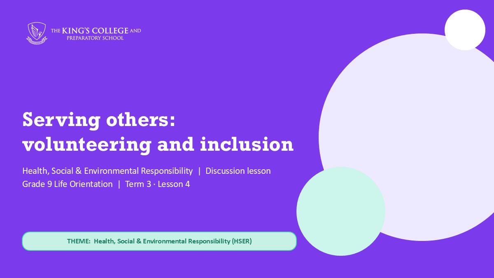

Term 3 · Lesson 4 · Discussion lesson
Serving others: volunteering and inclusion
Start here
Today I will
- Explain the value of volunteering and faith-based service
- Link national days to our history and to service
- Describe ways to include people with disabilities
If you had one free Saturday morning to help someone, who would you help and how?
Words to Know
| Word | Meaning |
|---|---|
| Volunteer | Someone who freely gives their time and skills to help others, without being paid. |
| NGO | Non-governmental organisation: a non-profit group, independent of government, that serves a cause. |
| Faith-based organisation | An organisation run by a church or other faith group to serve the community. |
| Disability | A long-term physical, sensory, intellectual or mental condition that can make some activities harder in a world not designed for it. |
| Inclusion | Making sure everyone can take part fully and is treated with respect. |
| National day | A day that remembers an important event in our history, e.g. Youth Day on 16 June. |
Slides

Videos
Notes
A healthy community is one where people look out for each other. Volunteering, faith-based service and including people with disabilities are ways of putting our values into action. For Christians, service follows the example of Jesus, who 'did not come to be served, but to serve' (Mark 10:45, NIV). South Africa's national days remind us of our history and of what ordinary people, including young people, can do to change their country.
Volunteering
A volunteer freely gives their time and skills to help others, without being paid. Volunteering is a choice. (Community service that a court orders as a punishment is not volunteering.) Some related words:
| Term | Meaning |
|---|---|
| Volunteerism | The idea and practice of giving time freely to serve others. |
| Altruism | Caring about the well-being of others without expecting anything back. |
| Charity | Giving money, goods or help to people in need; also an organisation that does this. |
| Philanthropy | Giving large amounts of money or resources to good causes. |
| Activism | Campaigning to bring about social or political change. |
Organisations that serve
| Type | What it is | Example |
|---|---|---|
| NGO (non-governmental organisation) | A non-profit organisation, independent of government, that serves a cause. | Gift of the Givers (disaster relief) |
| CBO (community-based organisation) | A small, local group that serves its own community. | A local soup kitchen or after-school homework club |
| FBO (faith-based organisation) | An organisation run by a church or other faith group. | A church feeding scheme, youth programme or care home |
Why volunteer?
| Benefits to the community | Benefits to the volunteer |
|---|---|
| Needs are met: food, care, company, tutoring | Empathy and a better understanding of others |
| People feel valued and less alone | Skills: teamwork, leadership, communication, problem-solving |
| Communities become stronger and safer | Experience for a CV or bursary application |
| People from different backgrounds get to know each other | Purpose, joy and gratitude |
Good volunteering starts with a real need, matches the volunteer's skills, and respects the dignity of the people being helped. Remember that people living with a serious illness, and the family members who care for them, often need support too: a meal, a visit, help with chores or simply company.
Faith-based service
In South Africa, churches and other faith communities are among the biggest providers of community care. Christians serve because God first loved us, and Jesus taught that serving others is serving Him (Matthew 25:40). Service is not about praise or feeling good about ourselves; it is love in action, done humbly.
National days
South Africa's public holidays remember important events and values. Several are linked to young people and to service:
| Day | Date | What it remembers |
|---|---|---|
| Human Rights Day | 21 March | The Sharpeville massacre (1960), where people protesting against pass laws were killed. |
| Freedom Day | 27 April | The first democratic elections in 1994. |
| Workers' Day | 1 May | The rights and contribution of workers. |
| Youth Day | 16 June | The 1976 Soweto uprising, when students protested against inferior education. |
| Mandela Day (not a public holiday) | 18 July | Nelson Mandela's birthday: South Africans give at least 67 minutes of service, one for each year of his public service. |
| National Women's Day | 9 August | The 1956 march of about 20 000 women to the Union Buildings against pass laws. |
| Heritage Day | 24 September | Our diverse cultures and heritage. |
| Day of Reconciliation | 16 December | Building unity and healing between South Africans. |
There are also awareness days, for example World Mental Health Day (10 October) and the International Day of Persons with Disabilities (3 December).
Disability rights and inclusion
A disability is a long-term physical, sensory (sight or hearing), intellectual or mental condition that can make some activities harder, especially in a world that was not designed with everyone in mind. Often the biggest barriers are not the disability itself, but stairs without ramps, inaccessible information and people's attitudes.
Section 9 of the Constitution forbids unfair discrimination on the grounds of disability, and South Africa has signed the United Nations Convention on the Rights of Persons with Disabilities. Inclusion means that people with disabilities can take part fully in school, sport, work and community life, and are treated with respect.
| Excluding | Including |
|---|---|
| Talking to the helper instead of the person | Speaking directly to the person |
| Labels or jokes ('the disabled kid') | Person-first language ('a learner who uses a wheelchair') |
| Helping without asking | Asking 'Would you like help?' and respecting the answer |
| Assuming they can't take part | Adapting games, tasks and equipment so everyone can take part |
| Blocking ramps or parking in disabled bays | Keeping access routes and facilities clear |
Example: South African swimmer Natalie du Toit, who lost part of her leg in an accident, competed at both the Olympic Games and the Paralympic Games in 2008 and won many Paralympic gold medals. Her story shows what becomes possible when people focus on ability, not disability.
Serving well
Good service treats people with dignity. Before you help, ask what people actually need rather than assuming. Work alongside people, not only for them. Avoid taking photos of people in need for social media without their permission: their dignity matters more than your post. Keep your promises: a project that starts with excitement and stops after one day can leave people more disappointed than before. Small, faithful service often makes the biggest difference.
Kinds of disability
| Kind | Examples | How to include |
|---|---|---|
| Physical | Using a wheelchair or crutches; cerebral palsy | Ramps and clear routes; adapted games; ask before helping |
| Sensory | Visual or hearing impairment | Large print or audio; face the person when speaking; South African Sign Language |
| Intellectual / learning | Down syndrome; dyslexia | Clear, simple instructions; extra time; patience |
| Mental / psychosocial | Long-term anxiety, depression or other conditions | Kindness, no stigma, flexible support |
Some disabilities are visible and some are not. Never assume that someone who looks well has no difficulty, and never question someone's need for support.
Case study: Thabo's Mandela Day team
For Mandela Day, Thabo's class planned a basketball afternoon with children from a nearby care centre. At the planning meeting, Mia pointed out that two of the children used wheelchairs. Thabo, who had first planned a normal match, asked Coach Ricardo for advice. Coach Ricardo suggested lowering one hoop, using a lighter ball and making a rule that every player must touch the ball before a team may shoot. Aarav made bright, simple scorecards. On the day, everyone played, and one of the children in a wheelchair scored the winning basket. Thabo said afterwards that it was the most fun he had had since he started playing basketball. The class decided to visit the centre once a term, not only on Mandela Day.
Questions to think about: How did the class include the children with disabilities? Which skills did each friend contribute? Why is it better to serve regularly than only once?
Worked exam answers
Question: Explain TWO benefits of volunteering for the teenager who volunteers. (2 x 2) (4)
Answer: The teenager develops skills such as teamwork and leadership ✓ which are useful at school and look good on a CV or bursary application ✓. They learn empathy by meeting people with different needs ✓ so they become more grateful and understanding towards others ✓.
Question: Recommend ONE way a school can include learners with disabilities in sport. Give the result. (1 x 3) (3)
Answer: The school can adapt games and equipment, e.g. lower hoops and lighter balls ✓ and train coaches to plan for every learner ✓ so learners with disabilities can take part fully and feel that they belong ✓.
Be able to define volunteering and NGO, explain benefits of volunteering for the community AND the volunteer, match national days to their events, and recommend ways to include people with disabilities (with the result), linking to section 9 of the Constitution.
Notice a need, use your gifts, and include everyone.

Jesus said He 'did not come to be served, but to serve'. What does that say about the kind of greatness God values? Who could you serve this term?
In class: Plan a service idea
- Name ONE real need near the school or in your community.
- List the skills and resources your group has.
- Plan ONE realistic action: what, who, where and when.
- How will you make sure a person with a disability can take part or benefit?
- Share your plan in one minute.
Test yourself
- Define 'volunteer'.
- What happens on Mandela Day, and when is it?
- Give ONE way to include a learner with a disability in sport.
Show answers
1. Someone who freely gives time and skills to help others without being paid. 2. 18 July: South Africans give at least 67 minutes of service to others. 3. e.g. ask how they would like to take part, adapt the rules or equipment, give them a role such as scorer or captain, keep access clear.
Finished early?
Plan a realistic Mandela Day service project for your class.
- Visit the Mandela Day website (www.mandeladay.com) or Gift of the Givers (www.giftofthegivers.org) for one project idea.
- Write the real need your project would meet, and who it would help.
- List the skills your class could bring, and one way to respect the dignity of the people you help.
- Write one way the project could continue after Mandela Day.